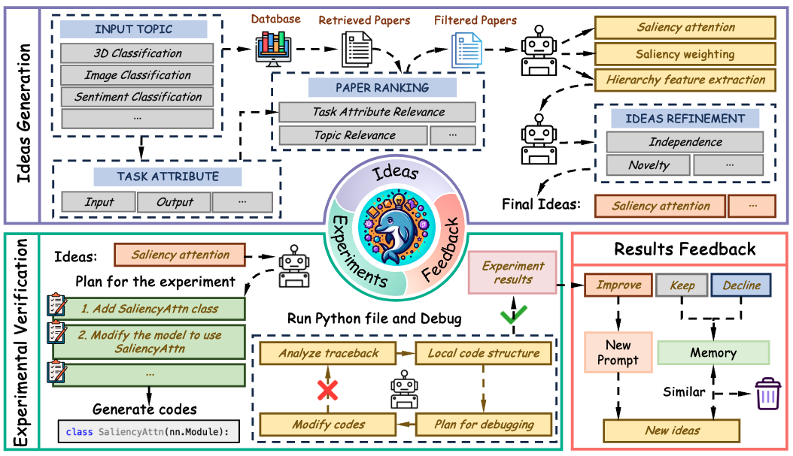
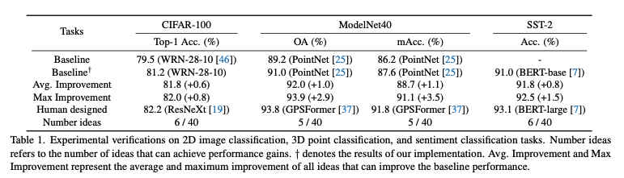

The scientific research paradigm is undergoing a profound transformation owing to the development of Artificial Intelligence (AI). Recent works demonstrate that various AI-assisted research methods can largely improve research efficiency by improving data analysis, accelerating computation, and fostering novel idea generation. To further move towards the ultimate goal (i.e., automatic scientific research), in this paper, we propose Dolphin, the first closed-loop open-ended auto-research framework to further build the entire process of human scientific research. Dolphin can generate research ideas, perform experiments, and get feedback from experimental results to generate higher-quality ideas. More specifically, Dolphin first generates novel ideas based on relevant papers which are ranked by the topic and task attributes. Then, the codes are automatically generated and debugged with the exception-traceback-guided local code structure. Finally, Dolphin automatically analyzes the results of each idea and feeds the results back to the next round of idea generation. Experiments are conducted on the benchmark datasets of different topics and results show that Dolphin can generate novel ideas continuously and complete the experiment in a loop. We highlight that Dolphin can automatically propose methods that are comparable to the state-of-the-art in some tasks such as 3D point classification.
We introduce Dolphin, a closed-loop open-ended auto-research framework, which is mainly composed of an idea generation process, an experiments verification process, and a result feedback process. The closed-loop means that the experimental results will be fed back into the idea generation process and the above three processes form a research cycle. In the idea generation process, Dolphin first retrieves papers based on the input topic and then filters papers that are not relevant to the topic. Then, the retrieved papers serve as references to guide LLMs to generate ideas, which will be further filtered through novelty and independence check process. Subsequently, Dolphin formulates experimental plans and proceeds to generate and debug code using a specifically designed error-traceback-guided debugging process. Finally, the results will be analyzed and utilized as feedback for the next cycle of ideas generation.

